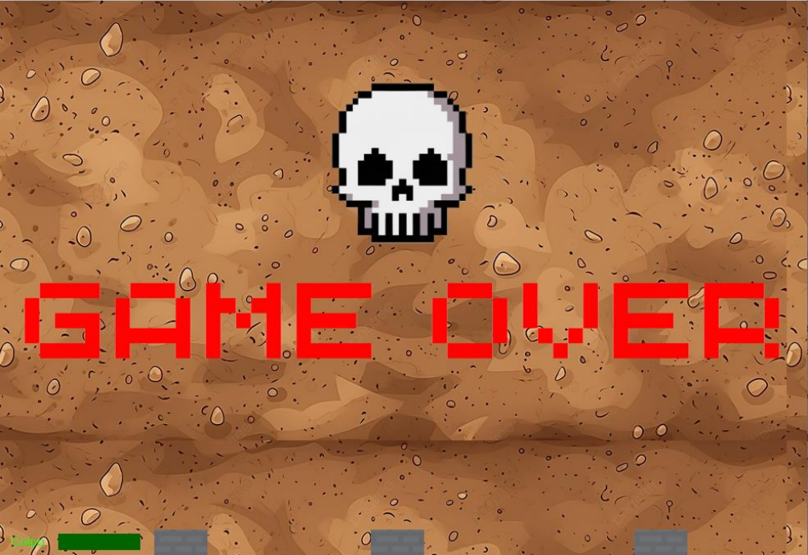
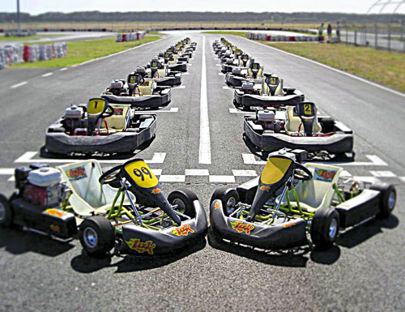

Video Game
Abbiamo progettato e creato a coppie un videogame sulla piattaforma "Visual studio" nel linguaggio di programmazione c#. Il nostro gioco si basa sulla guida di un carro armato in 2D, con l'obbiettivo di distruggere i carri nemici. Il punteggio e il nome del giocatore vengono salvati e confrontati con gli altri giocatori. Nella mappa di gioco sono presenti degli ostacoli che possono cambiare la loro disposizione a ogni nuova partita.

Software gestionale di un kartodromo
Abbiamo sviluppato a coppie, un software gestionale di un ipotetico kartodromo; con l'inserimento dei vari kart, piloti e gestione dello staff. Inoltre si può anche far partire una gara per vedere chi è il migliore tra i piloti.

Sito TREELLEORIENTA
Abbiamo realizzato il sito "TREELLEORIENTA", sulla base di quello già elaborato dalle classi
degli anni percedenti, per l'orientamento dei ragazzi delle superiori di primo grado.
Nello specifico ho collaborato nella parte di realizzazione e progettazione database e
la parte di LOGIN al sito per gli utenti che rappresentano le varie scuole e amministratore.